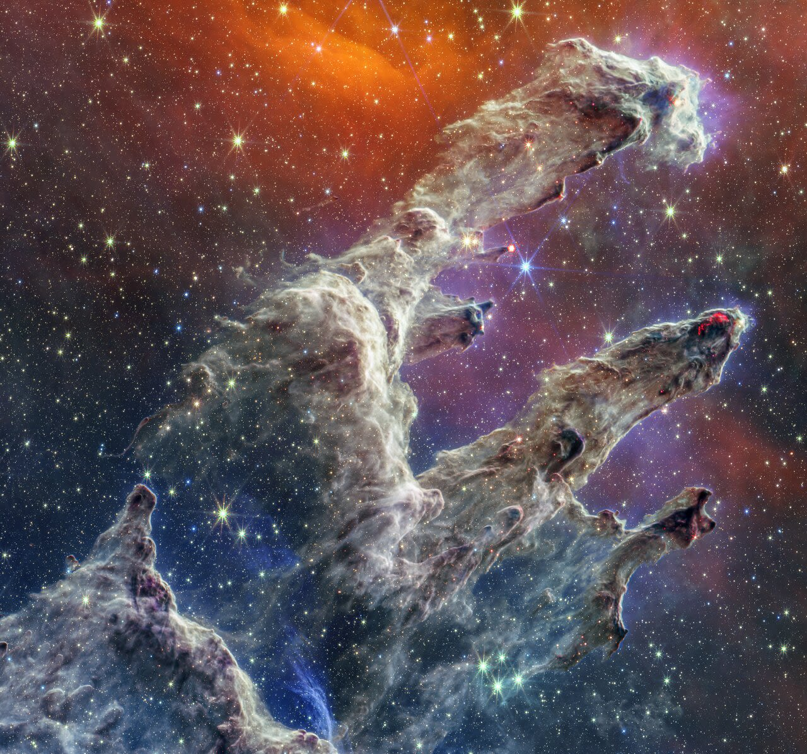
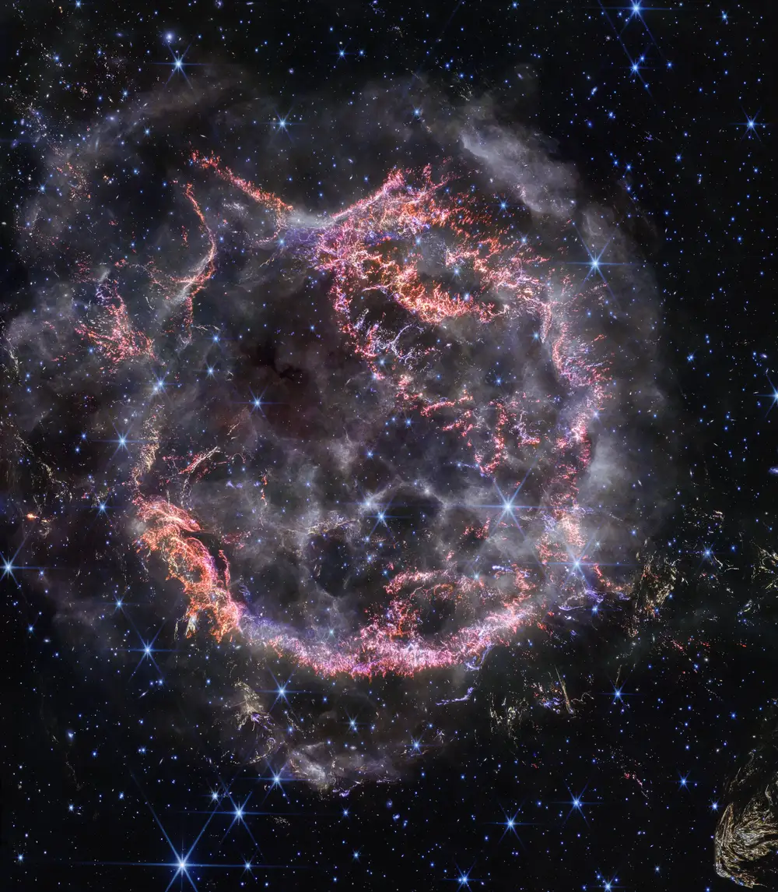
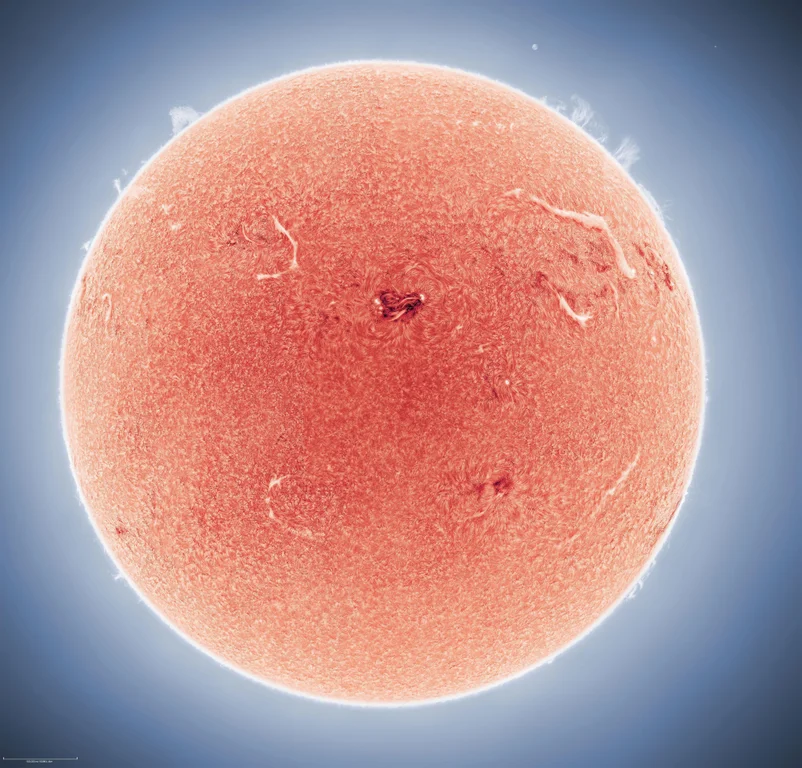

The Pillars of Creation
The Pillars of Creation, located in the Eagle Nebula (Messier 16), are massive structures of interstellar gas, roughly 5 light-years tall.
A Remnant Supernova
This is the remains of a massive star, Cassiopeia A, after a supernova. Stellar material is expelled, is the source of all life and can produce stunning pictures such as this.
The Sun
Through a specialized solar telescope, we can view sunspots, dark regions caused by magnetic concentrations, and solar prominences, large loops of plasma that closely follow the magnetic field.